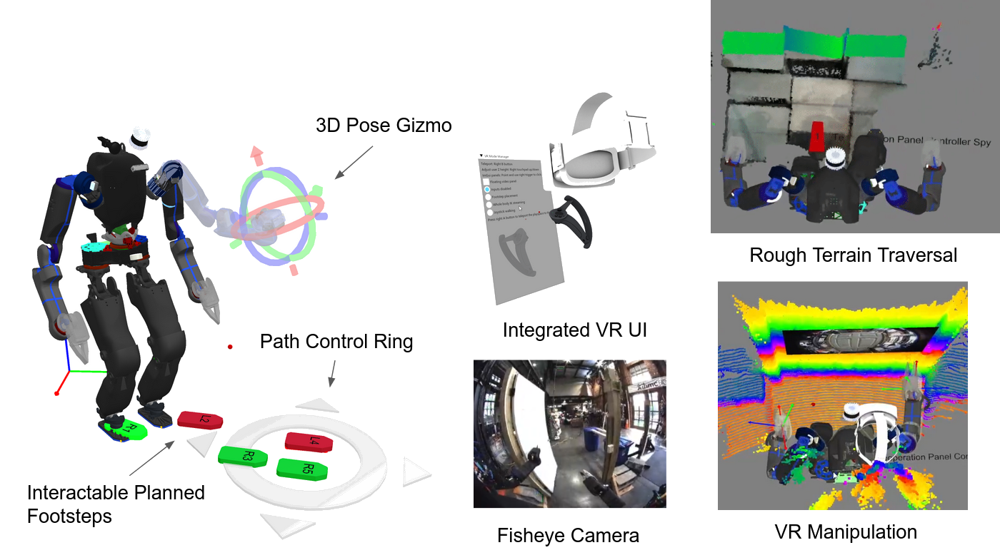
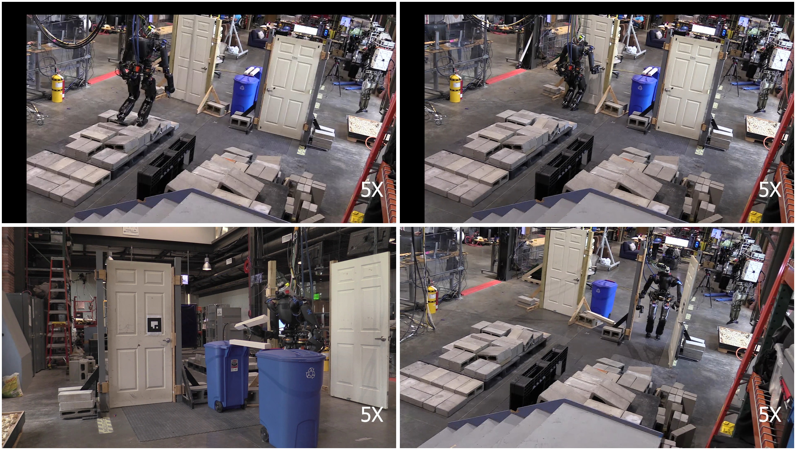
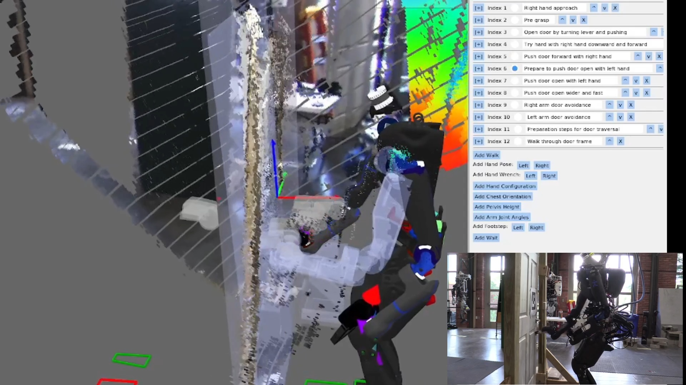
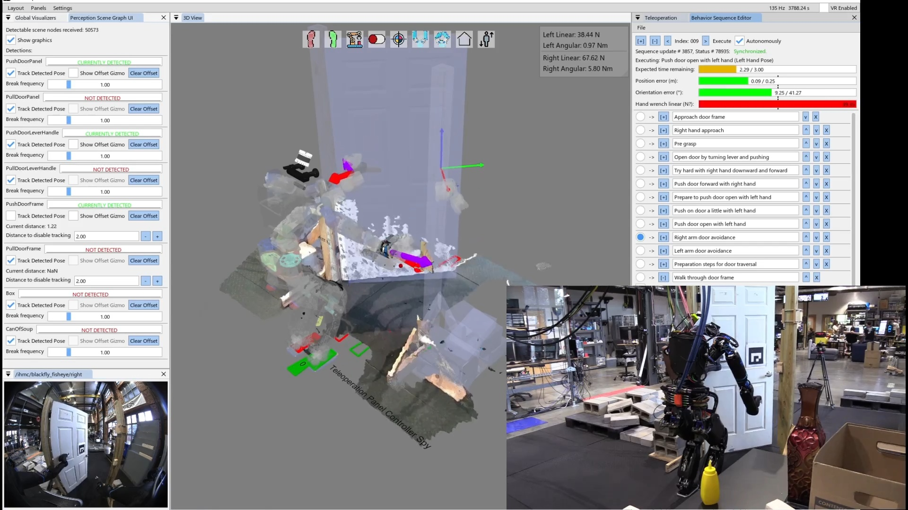
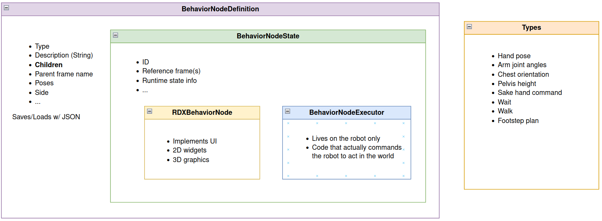
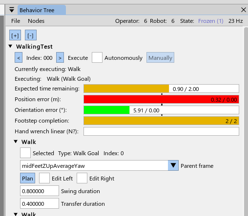
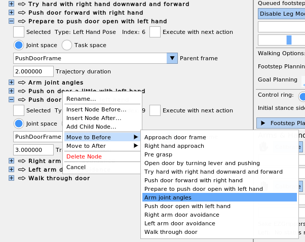

4.4. 2022-2023 Nadia, Runtime-Editable Sequences Era
4.4.1. Runtime-Editable Sequences
In 2022, inspired by the Affordance Template framework, we started developing an interactive and runtime editable behavior authoring pipeline. This was the beginning of the architecture we still use in 2026. The initial goal was to replicate the door behaviors we had before, but in a runtime editable way. To do this, the behavior state was implemented as a synchronized Conflict-Free Replicated Data Type (CRDT). This allows the operator and robot to share and co-modify the behavior action definitions and run modes. A screenshot from an early demo can be seen in Figure 4.16. This version of the behavior system had 4 action types: Walk, Hand Pose, Hand Configuration, and Chest Orientation. The Walk and Hand Pose actions were defined in task frames. It saved and loaded behaviors to and from JSON. However, it only supported a linear sequence of actions and they were only executable one at a time.

4.4.2. Teleoperated Building Exploration
Also in 2022, we switched to IHMC and Boardwalk Robotics’s Nadia humanoid robot and set some milestones for the next few years. Milestone 1 was a teleoperation-only multi-task demo. Milestone 1 was performed on the robot on September 9, 2022 using the RDX teleoperation UI, using an upgraded set of teleoperation features shown in Figure 4.17. In that demo, Nadia traversed rough terrain, traversed a push door, cleared debris, and traversed another push door in 7 minutes. The tasks for Milestone 1 can be seen in Figure 4.18. During this demo and with this set of functionality we found that some methods of teleoperation were faster in VR and some were faster with mouse and keyboard. RDX supported switching between them quickly. We used mouse and keyboard to place individual footsteps over a cinder block field and then switched to VR for debris clearing and the push doors, where we used the VR controllers to continuously stream the hand poses and the VR controller trigger buttons to open and close the hands. VR was also used to drive the robot with the joysticks.


This user interface also supported multiple operators as a side effect. Often, the VR operator would have another operator observing the monitor and sometimes clicking buttons to put the robot in pre-defined arm configurations, like the home and door avoidance. This helped us overcome gaps in the VR interface quickly and allowed for “copilot” supervision and monitoring, which doesn’t usually work well for a VR system.
4.4.3. Semi-Autonomous Pick and Place
A primary goal of the Milestone 1 demo was to get base functionalities in place with the plan to start adding autonomous components in later milestones. To that end, in 2023, we developed the next generation of behaviors, which were entirely authorable at runtime. We started with a can pick and place behavior and the push and pull door traversals.

On June 20, 2023, we executed a can of soup pick and place behavior in 1 minute and 50 seconds as shown in Figure 4.19. This behavior was slow, not autonomous, and used an ArUco marker instead of detecting the can directly. Our control of the SAKE Robotics EZGripper [61] in Nadia at this time was unreliable and there was no fallback node yet so the operator had to keep trying the gripper open and close actions. The operator had to visually check the state of the gripper fingers and re-execute the action if necessary. There was no way to get the state of the gripper from the user interface at this time. The operator also had to wait for each action to complete before starting the next because action completion conditions were not finished. Regardless, it was a good real-robot test of a savable/loadable and runtime editable affordance template behavior sequence.
4.4.4. Runtime-Editable Door Behaviors

Our first autonomous push door traversal on Nadia using this system was on June 27, 2023, as shown in Figure 4.20. UI improvements were made to condense each action node’s settings into collapsible areas so we could display larger sequences. Several new action types were added: hand wrench, pelvis height, arm joint angles, manual footsteps, and wait. We were able to autonomously traverse the push door in 36 seconds with this version of the system. The behavior was based on the pose of an ArUco marker detection. In this generation of behaviors we used the Ouster point cloud colored using the left Blackfly fisheye camera image for situational awareness in the operator UI.
The hand wrench action was used for a box pickup behavior which didn’t end up working very well. The wrenches were used for squeezing the box from the sides to hold it. However, the box wasn’t fully constrained and would wobble. Later, we decided to change the box picking strategy to using the grippers to pinch and lift from the top edges of a tote.

Figure 4.21 shows an improved version of the push door behavior executing on August 22, 2023. In this version, there are several enhancements to the behavior user interface. The first person view was included in the interface, allowing the operator to monitor the robot’s view of the door and the hands without needing line of sight. Other enhancements included 3D force and torque indicators on the hands. The idea behind this was to experiment with force based control by first taking readings on the current measurements. The force and torque data was pretty noisy and we weren’t sure how to handle it. Another enhancement was the action progress bar indicators. This allows the operator to monitor the execution progress of the actions and give the operator confidence that action nominal duration and termination conditions were working correctly. The speed of the behavior was the same as the June run at 36 seconds.
4.4.5. Footstep Plan Authoring

In September 2023 we made enhancements to the walk action as seen in Figure 4.22, allowing the behavior author to interactively edit a multi-step footstep plan. This was especially useful for authoring door traversal walk-throughs, as a very specific set of footsteps are required to satisfy controller stability limits while avoiding collisions between the robot’s shoulders and the door frame.
4.4.6. Behavior Node Decomposition

Also in September of 2023, we established the code structure for the behavior nodes as seen in Figure 4.23. This structure separated the concerns of a behavior node into four layers: the definition, the state, the executor, and the user interface (RDX) implementation. Each of the four layers was implemented in a separate code file to keep similar code in similar files. The definition layer was responsible for defining and serializing the data that defines the node to and from JSON files. The state layer contains the data that only exists once the node is instantiated and is common between the UI and executor implementations. It can also contain any data helper functions needed in the UI and the executor. The executor layer is the instantiated type of the node on the robot. It is the only layer that commands the robot directly through its ROS 2 API. It is also the only layer that has access to full resolution and frequency perception data, as it is co-located with the perception sensors. Finally, the UI layer is for rendering the authoring interface elements in RDX. The UI layer is also contained in a UI-specific folder that has access to the graphics engine and widget libraries.
4.4.7. Runtime-Editable Behavior Tree

In November 2023, we started to convert the sequence into a tree, as seen in Figure 4.24. Here, the root node “WalkingTest” can be seen at the top with an expanded arrow and the root node control widgets. Two child walk action nodes can be seen below it.
4.4.8. Next Action to Execute Pointer

Further enhancements to the behavior system were made in November of 2023. As seen in Figure 4.25, a green arrow was introduced to highlight the currently selected next node to execute. This created a uniquely identifiable marker for the operator to focus on that was distinct from the default ImGui widgets. Clicking the green arrow is used to set the index. Later the arrow would blink blue to signal the action was currently executing.
4.4.9. Moving and Reordering Nodes

Figure 4.26 shows a context menu feature used to reorder nodes and place them under different parents. This was especially useful if a node needed to be moved far away. Since switching to the tree-based view, this was the first time the nodes could be reordered or moved under new parents.
4.4.10. Nesting File-Backed Subtrees

A feature developed on November 16, 2023, can be seen in Figure 4.27, which shows how a node can be converted into a nested JSON file via the context menu. The JSON behavior loader now supported recursively loading behavior trees with nested JSON files. This supported the separation of skills into their own JSON files and kept larger tree files from getting too large.
4.4.11. Screw Primitive Action

In December of 2023, we developed a screw primitive action to open doors, which can be seen in Figure 4.28. This parameterized helical screw trajectory option was inspired by [14]. It allows the operator to define revolving motions useful for turning handles and swinging door panels. It is defined by a 3D axis (dashed white line), an angle of revolution, and a translation amount to move along the axis. The trajectory is also grasp-invariant, as it generates the trajectory online from the hand’s pose just before execution.
References cited on this page
[14] A. Pettinger, F. Alambeigi, and M. Pryor, “A versatile affordance modeling framework using screw primitives to increase autonomy during manipulation contact tasks,” IEEE Robotics and Automation Letters, vol. 7, no. 3, pp. 7224–7231, 2022, doi: 10.1109/LRA.2022.3181732.
[61] SAKE Robotics, “EZGripper™ robotic grippers.” https://sakerobotics.com/, 2024.
[70] E. Coumans and Y. Bai, “PyBullet, a python module for physics simulation for games, robotics and machine learning.” http://pybullet.org, 2016–2021.